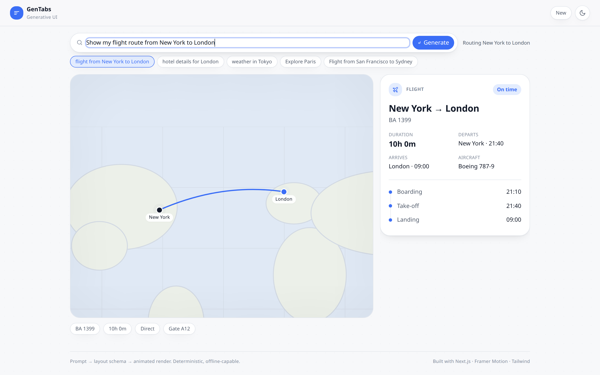
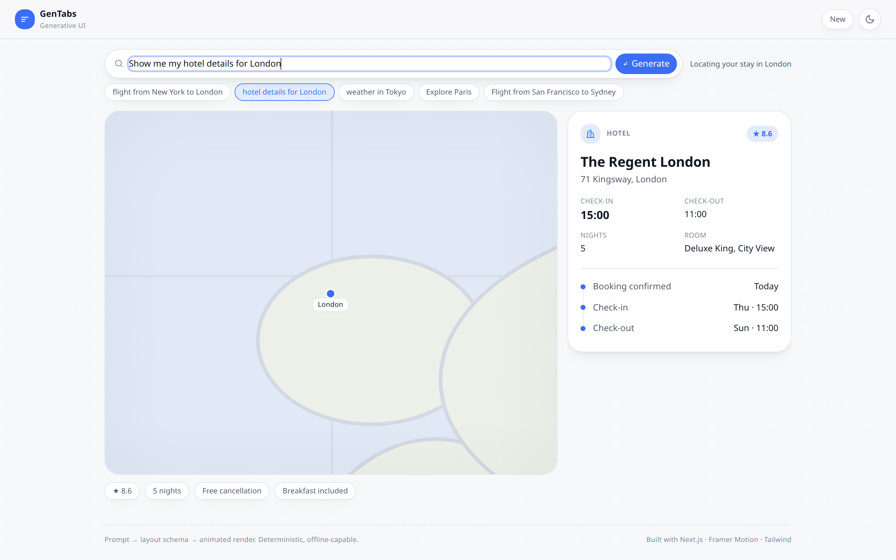

Full Stack Developer · UI/UX Focus
01 / 14A prompt-driven generative UI prototype, in the lineage of Google Disco / GenTabs.
Type a sentence. The app parses it deterministically into a layout schema and builds the screen on the fly — panels stagger in, a map springs up, a route draws itself, and shared elements morph between states instead of hard-cutting.
The concept
02 / 14Conventional search returns a list of documents. Disco/GenTabs returns an assembled interface — the response is a purpose-built screen for the thing you asked about, not a page of links.
The interface becomes a function of the query.
That the hard part is not the model. It is the mapping layer — turning language into a layout the renderer can trust — and the motion that makes a screen rebuilding itself feel intentional rather than broken.
Both are demonstrated here without an LLM in the loop.
No LLM is used. That is a deliberate scope decision, not a limitation — see slide 12.
Thesis
03 / 14One indirection layer decides everything.
Rather than branching on strings inside the UI, the prompt is compiled into a normalized, serializable Scene — a layout descriptor. The renderer only ever knows that schema. Every property of the system worth grading falls out of this one decision:
Architecture
04 / 14Intent is a bag of weighted keywords, not a black box — tunable, inspectable, and the same mechanism that resolves conflicts. A prompt containing both "flight" and "hotel" resolves to the higher weighted score, deterministically.
kind: "flight", arity: 2, keywords: { flight: 3, fly: 3, route: 2, trip: 1 }
A local gazetteer resolves places by longest-match-first, each carrying lat/lng and aliases. A shared project() maps geography into the stage's normalized 0–1 space using the same equirectangular projection the map is drawn on — so a projected marker lands on the matching landmass.
The contract
05 / 14// the contract between parsing and rendering interface Scene { key: string; // stable render identity intent: IntentKind; prompt: string; headline: string; // narrates the "generation" stage: StageConfig; // camera + markers + route detail: DetailPanel | null; chips: string[]; }
DetailPanel.id is always "detail", whatever the variant. Same id ⇒ the renderer treats a flight panel and a hotel panel as the same physical element ⇒ FLIP morph, not unmount/remount.
The map never re-instantiates. Scenes only change stage.camera and stage.markers/route, so every visual change is a tween between two schema values.
The contract, tested
06 / 14Where the boundary gets interesting.
A builder cannot compute the zoom that frames a route — the answer depends on the container's aspect ratio at render time, which the parser must not know about.
The descriptor states the requirement, not the value: camera.fit, a normalized rectangle that must stay in shot. MapStage resolves it against a ResizeObserver-measured container, treating the authored zoom as the tightest allowed framing.
New York → London keeps its authored 1.25. San Francisco → Sydney pulls back until both cities are on screen, at any viewport. Single-focus scenes omit fit entirely.
This is the boundary working as designed: the parser stays pure and deterministic — and therefore unit-testable — while everything that needs to know about pixels stays in the renderer.
Signature moment · 1
07 / 14"Show my flight route from New York to London"
The centred hero prompt bar contracts and repositions to the top strip — one mounted element, FLIP-slid, never a swap.
The map stage scales up into the workspace on a spring camera move.
An SVG route draws itself — animated pathLength from the New York marker to the London marker.
The detail rail slides in and its fields enter staggered: flight number, duration, landing time.
Signature moment · 2
08 / 14…then "Show me my hotel details for London"
Continuity is the explicit goal, so the invariant that makes it possible is covered by a test rather than left to convention:
✓ panel id is stable across flight→hotel (enables morph)
If a future change breaks the shared identity, the morph silently degrades into a hard cut — the suite catches it first.
The prototype, running
09 / 14

Motion strategy
10 / 14Framer Motion was chosen over GSAP or WAAPI for one decisive reason: layout + layoutId give FLIP for free — exactly the primitive the Morph demands. It also ships useReducedMotion(), keeping accessibility inside the motion system rather than bolted on.
| Token | Use | Character |
|---|---|---|
| spring.press | hover / tap | 520 / 30 |
| spring.layout | morphs, docking | 240 / 30 |
| spring.entrance | panels, stagger | 260 / 32 |
| spring.camera | map zoom / pan | 120 / 26 |
Components import these instead of hand-tuning numbers. Only compositor-friendly properties animate — transform, opacity, pathLength.
A standalone illustration of the primitive — the container persists and resizes while its contents cross-fade.
Making generation legible
11 / 14Instant results would read as a lookup. The machine gives the fake generation a legible rhythm: skeletons occupy the final geometry first, so revealed content never shifts the layout, and the reveal reads as the container filling in.
Content then enters with staggerChildren: 0.07, blur-to-sharp.
On a follow-up prompt the previous scene's panels stay mounted. The machine's next generating → ready cycle is therefore expressed as a morph rather than a reset — the continuity is structural, not special-cased.
Under prefers-reduced-motion the same timings collapse to 60ms / 90ms.
Craft
12 / 14Semantic CSS variables — --ink, --surface, --accent — never raw hex in components, so the entire palette re-themes by swapping one variable block. A single modular type scale, 8pt spacing rhythm, tokenized elevation and radius.
Body ink targets ≥7:1 contrast; muted text ≥4.5:1 (WCAG AA/AAA).
Semantic landmarks and dl/dt/dd; skip-to-content; visible tokenized focus rings. The map carries a descriptive role="img" label ("Map showing a route from New York to London") while decorative SVG is hidden.
The lifecycle is narrated through an aria-live region, so generation is perceivable without sight.
Reduced motion is honoured in two layers — a global CSS reset neutralizing shimmer and transitions, and useReducedMotion() in code, which swaps positional animation for plain opacity and shortens the machine. Responsive throughout: below lg the same panels reflow to a stacked column rather than re-mounting.
This deck is built from those same tokens — it inherits the app's palette, type stack and dark theme rather than restating them.
Future scalability
13 / 14Because the renderer consumes a serializable schema rather than prose, the producer behind it is interchangeable. A model emitting Scene-shaped JSON drops into the same seam — no renderer changes — and everything already built keeps working.
The schema is also the safety boundary. A model proposes a layout; it never ships executable UI. Unknown variants fall back rather than crash, and every scene remains inspectable, diffable and testable — the same properties that make the deterministic parser trustworthy today.
Built & verified
14 / 14No API keys, no database, no server runtime — a CDN-served build.